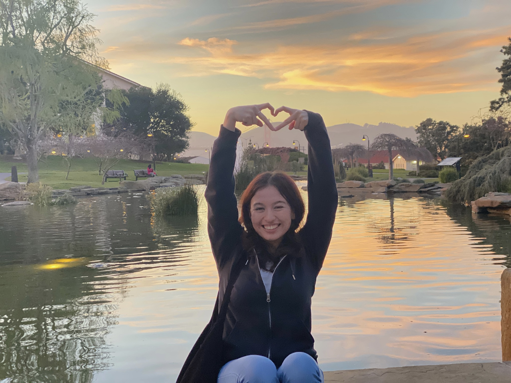

Emily Cabello
Hi, my name is Emily Cabello. I'm a senior visual communication design major interested in working in brand identity creation and marketing. I'm from Santa Ana, California, and have been living in San Francisco for two years. My time outside of school and work is spent with my cat, crocheting, and exploring other art mediums; currently I'm into fiber arts.